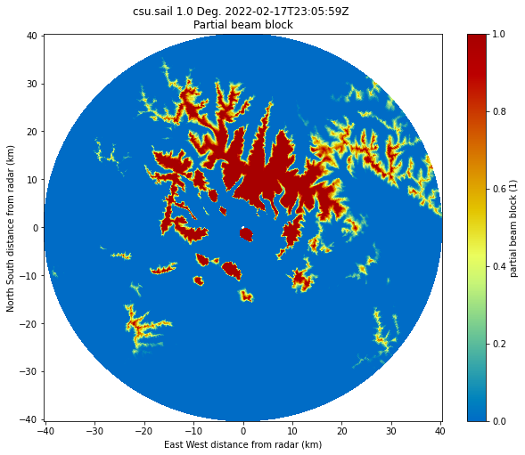
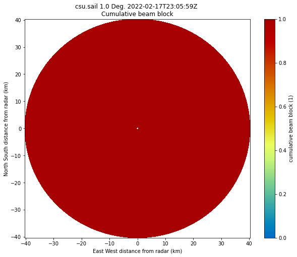

Beam Blockage for SAIL
Contents
Beam Blockage for SAIL#
import pyart
import wradlib as wrl
import cartopy.crs as ccrs
import numpy as np
import matplotlib.pyplot as plt
## You are using the Python ARM Radar Toolkit (Py-ART), an open source
## library for working with weather radar data. Py-ART is partly
## supported by the U.S. Department of Energy as part of the Atmospheric
## Radiation Measurement (ARM) Climate Research Facility, an Office of
## Science user facility.
##
## If you use this software to prepare a publication, please cite:
##
## JJ Helmus and SM Collis, JORS 2016, doi: 10.5334/jors.119
radar = pyart.io.read('/home/zsherman/Downloads/xprecipradar_guc_volume_20220217-230559.b1.nc')
radar.fields.keys()
dict_keys(['DBZ', 'VEL', 'WIDTH', 'ZDR', 'PHIDP', 'RHOHV', 'NCP', 'SNR', 'DBZhv'])
display = pyart.graph.RadarMapDisplay(radar)
/home/zsherman/anaconda3/envs/pyart_env/lib/python3.8/site-packages/cartopy/crs.py:2320: DeprecationWarning: `np.float` is a deprecated alias for the builtin `float`. To silence this warning, use `float` by itself. Doing this will not modify any behavior and is safe. If you specifically wanted the numpy scalar type, use `np.float64` here.
Deprecated in NumPy 1.20; for more details and guidance: https://numpy.org/devdocs/release/1.20.0-notes.html#deprecations
a = np.float(self.globe.semimajor_axis or WGS84_SEMIMAJOR_AXIS)
/home/zsherman/anaconda3/envs/pyart_env/lib/python3.8/site-packages/cartopy/crs.py:2321: DeprecationWarning: `np.float` is a deprecated alias for the builtin `float`. To silence this warning, use `float` by itself. Doing this will not modify any behavior and is safe. If you specifically wanted the numpy scalar type, use `np.float64` here.
Deprecated in NumPy 1.20; for more details and guidance: https://numpy.org/devdocs/release/1.20.0-notes.html#deprecations
b = np.float(self.globe.semiminor_axis or a)
fig = plt.figure(figsize=(10, 10))
display.plot_ppi_map('DBZ', 0)
/home/zsherman/dev/pyart/pyart/graph/radarmapdisplay.py:279: UserWarning: No projection was defined for the axes. Overridding defined axes and using default axes with projection Lambert Conformal.
warnings.warn(

radar.altitude['data']
masked_array(data=[3149.19995117],
mask=False,
fill_value=1e+20)
tif_file = '/home/zsherman/Downloads/sail.tif'
def beam_block(radar, tif_file, radar_height_offset=10.0,
beam_width=1.0):
"""
Beam Block Radar Calculation.
Parameters
----------
radar : Radar
Radar object used.
tif_name : string
Name of geotiff file to use for the
calculation.
radar_height_offset : float
Add height to the radar altitude for radar towers.
Other Parameters
----------------
beam_width : float
Radar's beam width for calculation.
Default value is 1.0.
Returns
-------
pbb_all : array
Array of partial beam block fractions for each
gate in all sweeps.
cbb_all : array
Array of cumulative beam block fractions for
each gate in all sweeps.
References
----------
Bech, J., B. Codina, J. Lorente, and D. Bebbington,
2003: The sensitivity of single polarization weather
radar beam blockage correction to variability in the
vertical refractivity gradient. J. Atmos. Oceanic
Technol., 20, 845–855
Heistermann, M., Jacobi, S., and Pfaff, T., 2013:
Technical Note: An open source library for processing
weather radar data (wradlib), Hydrol. Earth Syst.
Sci., 17, 863-871, doi:10.5194/hess-17-863-2013
Helmus, J.J. & Collis, S.M., (2016). The Python ARM
Radar Toolkit (Py-ART), a Library for Working with
Weather Radar Data in the Python Programming Language.
Journal of Open Research Software. 4(1), p.e25.
DOI: http://doi.org/10.5334/jors.119
"""
# Opening the tif file and getting the values ready to be
# converted into polar values.
rasterfile = tif_file
data_raster = wrl.io.open_raster(rasterfile)
rastervalues, rastercoords, proj = wrl.georef.extract_raster_dataset(
data_raster, nodata=None)
#rastervalues_, rastercoords_, proj = wrl.georef.extract_raster_dataset(data_raster, nodata=-32768.)
sitecoords = (np.float(radar.longitude['data']),
np.float(radar.latitude['data']),
np.float(radar.altitude['data'] + radar_height_offset))
pbb_arrays = []
cbb_arrays = []
_range = radar.range['data']
beamradius = wrl.util.half_power_radius(_range, beam_width)
# Cycling through all sweeps in the radar object.
print('Calculating beam blockage.')
for i in range(len(radar.sweep_start_ray_index['data'])):
index_start = radar.sweep_start_ray_index['data'][i]
index_end = radar.sweep_end_ray_index['data'][i] + 1
elevs = radar.elevation['data'][index_start:index_end]
azimuths = radar.azimuth['data'][index_start:index_end]
rg, azg = np.meshgrid(_range, azimuths)
rg, eleg = np.meshgrid(_range, elevs)
nrays = azimuths.shape[0] # number of rays
nbins = radar.ngates # number of range bins
bw = beam_width # half power beam width (deg)
range_res = 60. # range resolution (meters)
el = radar.fixed_angle['data'][i]
coord = wrl.georef.sweep_centroids(nrays, range_res, nbins, el)
coords = wrl.georef.spherical_to_proj(rg, azg, eleg,
sitecoords, proj=proj)
lon = coords[..., 0]
lat = coords[..., 1]
alt = coords[..., 2]
polcoords = coords[..., :2]
rlimits = (lon.min(), lat.min(), lon.max(), lat.max())
#Clip the region inside our bounding box
ind = wrl.util.find_bbox_indices(rastercoords, rlimits)
rastercoords = rastercoords[ind[0]:ind[3], ind[0]:ind[2], ...]
rastervalues = rastervalues[ind[0]:ind[3], ind[0]:ind[2]]
polarvalues = wrl.ipol.cart_to_irregular_spline(
rastercoords, rastervalues, polcoords, order=3,
prefilter=False)
# Calculate partial beam blockage using wradlib.
pbb = wrl.qual.beam_block_frac(polarvalues, alt, beamradius)
print(pbb.min())
print(pbb.max())
pbb = np.ma.masked_invalid(pbb)
pbb[pbb < 0] = 0.0
pbb[pbb > 1] = 1.0
pbb_arrays.append(pbb)
# Calculate cumulative beam blockage using wradlib.
cbb = wrl.qual.cum_beam_block_frac(pbb)
cbb_arrays.append(cbb)
pbb_all = np.ma.concatenate(pbb_arrays)
cbb_all = np.ma.concatenate(cbb_arrays)
del data_raster
return pbb_all, cbb_all
def pbb_to_dict(pbb_all):
""" Function that takes the pbb_all array and turns
it into a dictionary to be used and added to the
pyart radar object. """
pbb_dict = {}
pbb_dict['coordinates'] = 'elevation azimuth range'
pbb_dict['units'] = '1'
pbb_dict['data'] = pbb_all
pbb_dict['standard_name'] = 'partial_beam_block'
pbb_dict['long_name'] = 'Partial Beam Block Fraction'
pbb_dict['comment'] = 'Partial beam block fraction due to terrain.'
return pbb_dict
def cbb_to_dict(cbb_all):
""" Function that takes the cbb_all array and turns
it into a dictionary to be used and added to the
pyart radar object. """
cbb_dict = {}
cbb_dict['coordinates'] = 'elevation azimuth range'
cbb_dict['units'] = '1'
cbb_dict['data'] = cbb_all
cbb_dict['standard_name'] = 'cumulative_beam_block'
cbb_dict['long_name'] = 'Cumulative Beam Block Fraction'
cbb_dict['comment'] = 'Cumulative beam block fraction due to terrain.'
return cbb_dict
pbb, cbb = beam_block(radar, tif_file, radar_height_offset=10.0, beam_width=1.0)
/tmp/ipykernel_19718/389964371.py:51: DeprecationWarning: `np.float` is a deprecated alias for the builtin `float`. To silence this warning, use `float` by itself. Doing this will not modify any behavior and is safe. If you specifically wanted the numpy scalar type, use `np.float64` here.
Deprecated in NumPy 1.20; for more details and guidance: https://numpy.org/devdocs/release/1.20.0-notes.html#deprecations
sitecoords = (np.float(radar.longitude['data']),
/tmp/ipykernel_19718/389964371.py:52: DeprecationWarning: `np.float` is a deprecated alias for the builtin `float`. To silence this warning, use `float` by itself. Doing this will not modify any behavior and is safe. If you specifically wanted the numpy scalar type, use `np.float64` here.
Deprecated in NumPy 1.20; for more details and guidance: https://numpy.org/devdocs/release/1.20.0-notes.html#deprecations
np.float(radar.latitude['data']),
/tmp/ipykernel_19718/389964371.py:53: DeprecationWarning: `np.float` is a deprecated alias for the builtin `float`. To silence this warning, use `float` by itself. Doing this will not modify any behavior and is safe. If you specifically wanted the numpy scalar type, use `np.float64` here.
Deprecated in NumPy 1.20; for more details and guidance: https://numpy.org/devdocs/release/1.20.0-notes.html#deprecations
np.float(radar.altitude['data'] + radar_height_offset))
Calculating beam blockage.
-1.2091031789350578e-06
1.000001209103179
-1.2091031789350578e-06
1.000001209103179
0.0
1.0
0.0
1.000001209103179
-1.2091031789350578e-06
1.0
-1.2091031789350578e-06
1.000001209103179
-1.2091031789350578e-06
1.000001209103179
-1.2091031789350578e-06
1.000001209103179
radar.latitude
{'_FillValue': -9999.0,
'long_name': 'Latitude',
'units': 'degree_N',
'standard_name': 'latitude',
'valid_min': -90.0,
'valid_max': 90.0,
'data': masked_array(data=[38.89838028],
mask=False,
fill_value=1e+20)}
radar.range['data'][0:4]
masked_array(data=[-112.830795 , -52.889847 , 7.0511017, 66.99205 ],
mask=False,
fill_value=1e+20,
dtype=float32)
radar.gate_latitude['data'].max()
39.260605
cbb.min()
0.0
pbb_dict = pbb_to_dict(pbb)
cbb_dict = cbb_to_dict(cbb)
radar.add_field('partial_beam_blockage', pbb_dict, replace_existing=True)
radar.add_field('cumulative_beam_blockage', cbb_dict, replace_existing=True)
radar.fields['partial_beam_blockage']['data'].min()
0.0
fig = plt.figure(figsize=(10, 8))
display.plot_ppi('partial_beam_blockage', 0, cmap='pyart_HomeyerRainbow')
plt.savefig('/home/zsherman/pbb_sail.png')

pbb[:, 0]
masked_array(data=[1., 1., 1., ..., 0., 0., 0.],
mask=False,
fill_value=1e+20)
See the blockage diminish as fixed angle increases#
for i in range(radar.nsweeps):
fig = plt.figure(figsize=(10, 10))
radar_foo = radar.extract_sweeps([i])
display_foo = pyart.graph.RadarMapDisplay(radar_foo)
display.plot_ppi_map('partial_beam_blockage', i)
plt.show()
/home/zsherman/anaconda3/envs/pyart_env/lib/python3.8/site-packages/cartopy/crs.py:2320: DeprecationWarning: `np.float` is a deprecated alias for the builtin `float`. To silence this warning, use `float` by itself. Doing this will not modify any behavior and is safe. If you specifically wanted the numpy scalar type, use `np.float64` here.
Deprecated in NumPy 1.20; for more details and guidance: https://numpy.org/devdocs/release/1.20.0-notes.html#deprecations
a = np.float(self.globe.semimajor_axis or WGS84_SEMIMAJOR_AXIS)
/home/zsherman/anaconda3/envs/pyart_env/lib/python3.8/site-packages/cartopy/crs.py:2321: DeprecationWarning: `np.float` is a deprecated alias for the builtin `float`. To silence this warning, use `float` by itself. Doing this will not modify any behavior and is safe. If you specifically wanted the numpy scalar type, use `np.float64` here.
Deprecated in NumPy 1.20; for more details and guidance: https://numpy.org/devdocs/release/1.20.0-notes.html#deprecations
b = np.float(self.globe.semiminor_axis or a)
/home/zsherman/anaconda3/envs/pyart_env/lib/python3.8/site-packages/cartopy/crs.py:2320: DeprecationWarning: `np.float` is a deprecated alias for the builtin `float`. To silence this warning, use `float` by itself. Doing this will not modify any behavior and is safe. If you specifically wanted the numpy scalar type, use `np.float64` here.
Deprecated in NumPy 1.20; for more details and guidance: https://numpy.org/devdocs/release/1.20.0-notes.html#deprecations
a = np.float(self.globe.semimajor_axis or WGS84_SEMIMAJOR_AXIS)
/home/zsherman/anaconda3/envs/pyart_env/lib/python3.8/site-packages/cartopy/crs.py:2321: DeprecationWarning: `np.float` is a deprecated alias for the builtin `float`. To silence this warning, use `float` by itself. Doing this will not modify any behavior and is safe. If you specifically wanted the numpy scalar type, use `np.float64` here.
Deprecated in NumPy 1.20; for more details and guidance: https://numpy.org/devdocs/release/1.20.0-notes.html#deprecations
b = np.float(self.globe.semiminor_axis or a)
/home/zsherman/anaconda3/envs/pyart_env/lib/python3.8/site-packages/cartopy/crs.py:2320: DeprecationWarning: `np.float` is a deprecated alias for the builtin `float`. To silence this warning, use `float` by itself. Doing this will not modify any behavior and is safe. If you specifically wanted the numpy scalar type, use `np.float64` here.
Deprecated in NumPy 1.20; for more details and guidance: https://numpy.org/devdocs/release/1.20.0-notes.html#deprecations
a = np.float(self.globe.semimajor_axis or WGS84_SEMIMAJOR_AXIS)
/home/zsherman/anaconda3/envs/pyart_env/lib/python3.8/site-packages/cartopy/crs.py:2321: DeprecationWarning: `np.float` is a deprecated alias for the builtin `float`. To silence this warning, use `float` by itself. Doing this will not modify any behavior and is safe. If you specifically wanted the numpy scalar type, use `np.float64` here.
Deprecated in NumPy 1.20; for more details and guidance: https://numpy.org/devdocs/release/1.20.0-notes.html#deprecations
b = np.float(self.globe.semiminor_axis or a)
/home/zsherman/anaconda3/envs/pyart_env/lib/python3.8/site-packages/cartopy/crs.py:2320: DeprecationWarning: `np.float` is a deprecated alias for the builtin `float`. To silence this warning, use `float` by itself. Doing this will not modify any behavior and is safe. If you specifically wanted the numpy scalar type, use `np.float64` here.
Deprecated in NumPy 1.20; for more details and guidance: https://numpy.org/devdocs/release/1.20.0-notes.html#deprecations
a = np.float(self.globe.semimajor_axis or WGS84_SEMIMAJOR_AXIS)
/home/zsherman/anaconda3/envs/pyart_env/lib/python3.8/site-packages/cartopy/crs.py:2321: DeprecationWarning: `np.float` is a deprecated alias for the builtin `float`. To silence this warning, use `float` by itself. Doing this will not modify any behavior and is safe. If you specifically wanted the numpy scalar type, use `np.float64` here.
Deprecated in NumPy 1.20; for more details and guidance: https://numpy.org/devdocs/release/1.20.0-notes.html#deprecations
b = np.float(self.globe.semiminor_axis or a)
/home/zsherman/anaconda3/envs/pyart_env/lib/python3.8/site-packages/cartopy/crs.py:2320: DeprecationWarning: `np.float` is a deprecated alias for the builtin `float`. To silence this warning, use `float` by itself. Doing this will not modify any behavior and is safe. If you specifically wanted the numpy scalar type, use `np.float64` here.
Deprecated in NumPy 1.20; for more details and guidance: https://numpy.org/devdocs/release/1.20.0-notes.html#deprecations
a = np.float(self.globe.semimajor_axis or WGS84_SEMIMAJOR_AXIS)
/home/zsherman/anaconda3/envs/pyart_env/lib/python3.8/site-packages/cartopy/crs.py:2321: DeprecationWarning: `np.float` is a deprecated alias for the builtin `float`. To silence this warning, use `float` by itself. Doing this will not modify any behavior and is safe. If you specifically wanted the numpy scalar type, use `np.float64` here.
Deprecated in NumPy 1.20; for more details and guidance: https://numpy.org/devdocs/release/1.20.0-notes.html#deprecations
b = np.float(self.globe.semiminor_axis or a)
/home/zsherman/anaconda3/envs/pyart_env/lib/python3.8/site-packages/cartopy/crs.py:2320: DeprecationWarning: `np.float` is a deprecated alias for the builtin `float`. To silence this warning, use `float` by itself. Doing this will not modify any behavior and is safe. If you specifically wanted the numpy scalar type, use `np.float64` here.
Deprecated in NumPy 1.20; for more details and guidance: https://numpy.org/devdocs/release/1.20.0-notes.html#deprecations
a = np.float(self.globe.semimajor_axis or WGS84_SEMIMAJOR_AXIS)
/home/zsherman/anaconda3/envs/pyart_env/lib/python3.8/site-packages/cartopy/crs.py:2321: DeprecationWarning: `np.float` is a deprecated alias for the builtin `float`. To silence this warning, use `float` by itself. Doing this will not modify any behavior and is safe. If you specifically wanted the numpy scalar type, use `np.float64` here.
Deprecated in NumPy 1.20; for more details and guidance: https://numpy.org/devdocs/release/1.20.0-notes.html#deprecations
b = np.float(self.globe.semiminor_axis or a)
/home/zsherman/anaconda3/envs/pyart_env/lib/python3.8/site-packages/cartopy/crs.py:2320: DeprecationWarning: `np.float` is a deprecated alias for the builtin `float`. To silence this warning, use `float` by itself. Doing this will not modify any behavior and is safe. If you specifically wanted the numpy scalar type, use `np.float64` here.
Deprecated in NumPy 1.20; for more details and guidance: https://numpy.org/devdocs/release/1.20.0-notes.html#deprecations
a = np.float(self.globe.semimajor_axis or WGS84_SEMIMAJOR_AXIS)
/home/zsherman/anaconda3/envs/pyart_env/lib/python3.8/site-packages/cartopy/crs.py:2321: DeprecationWarning: `np.float` is a deprecated alias for the builtin `float`. To silence this warning, use `float` by itself. Doing this will not modify any behavior and is safe. If you specifically wanted the numpy scalar type, use `np.float64` here.
Deprecated in NumPy 1.20; for more details and guidance: https://numpy.org/devdocs/release/1.20.0-notes.html#deprecations
b = np.float(self.globe.semiminor_axis or a)
/home/zsherman/anaconda3/envs/pyart_env/lib/python3.8/site-packages/cartopy/crs.py:2320: DeprecationWarning: `np.float` is a deprecated alias for the builtin `float`. To silence this warning, use `float` by itself. Doing this will not modify any behavior and is safe. If you specifically wanted the numpy scalar type, use `np.float64` here.
Deprecated in NumPy 1.20; for more details and guidance: https://numpy.org/devdocs/release/1.20.0-notes.html#deprecations
a = np.float(self.globe.semimajor_axis or WGS84_SEMIMAJOR_AXIS)
/home/zsherman/anaconda3/envs/pyart_env/lib/python3.8/site-packages/cartopy/crs.py:2321: DeprecationWarning: `np.float` is a deprecated alias for the builtin `float`. To silence this warning, use `float` by itself. Doing this will not modify any behavior and is safe. If you specifically wanted the numpy scalar type, use `np.float64` here.
Deprecated in NumPy 1.20; for more details and guidance: https://numpy.org/devdocs/release/1.20.0-notes.html#deprecations
b = np.float(self.globe.semiminor_axis or a)
Still need to find why cumulative beam blockage isn’t working…#
fig = plt.figure(figsize=(10, 8))
display.plot_ppi('cumulative_beam_blockage', 0, cmap='pyart_HomeyerRainbow', vmin=0, vmax=1)

radar.fields['cumulative_beam_blockage']['data'].mean()
0.99175790544643
radar.fields['cumulative_beam_blockage']['data'][:, 0]
masked_array(data=[1., 1., 1., ..., 0., 0., 0.],
mask=False,
fill_value=1e+20)
Part of me believes that lat and lon info is wrong, so the beam blockage assumes the radar is in the mountain in the center of the ppi#
radar.azimuth['data'].shape
radar.fields['DBZ']['data'].shape